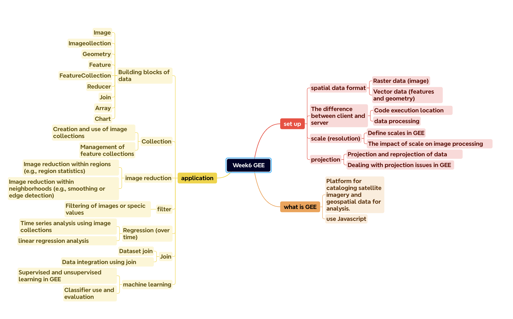
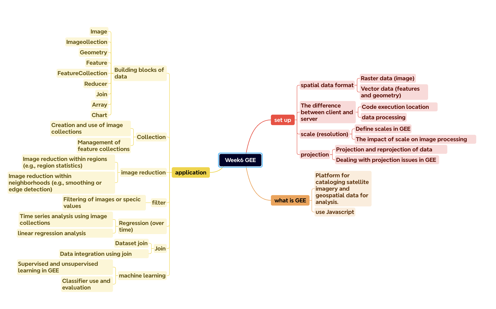

knitr::include_graphics("figures/w6-GEE.png")
This is a mind map of this week’s lecture.
knitr::include_graphics("figures/w6-GEE.png")
Through this week’s practical content, I initially learned how to use JavaScript to write code in GEE, including the use of some basic programming concepts such as variables, strings, lists, and dictionaries. First, geographical information points were created, Landsat data was imported, and GEE operations such as image clipping and texture measurement were performed. I also learned to process data and how to load, filter and display image datasets, by processing image collections, using equal methods such as straight, mean, etc. to synthesize images. Next, I learned how to use principal component analysis (PCA) to reduce the dimensionality of image data, including how to calculate covariance matrices, eigenvalues, and eigenvectors, and output the results as images.
Google Earth Engine (GEE) is widely used in many fields because of its powerful data analysis capabilities and large geographical information data sets. Some major applications include: environmental monitoring, agriculture, climate change research, land cover mapping, disaster management, etc.
Among them, in agriculture, GEE can be used to monitor crops, predict yields, and manage agricultural resources more effectively. It helps assess crop health, soil moisture, and predict pest infestations. Mutanga and Kumar (2019) studied several key applications of GEE in agriculture, including crop yield estimation, crop area mapping, pest and disease vulnerability and suitability assessment. Among them, using Terra MODIS data and Landsat data, GEE was able to estimate the total primary productivity of seven crops in Montana, USA, from 2008 to 2015 at a spatial resolution of 30 meters. High spatial resolution Worldview 2 data were used to map smallholder heterogeneous farmland areas in the African context of Mali. This mapping utilizes set rules to optimize classification accuracy, demonstrating the high processing power of GEE. Moreover, using a combination of 10-day period Sentinel data and 16-day period Landsat TM data, a map of farmland and non-farmland area across the African continent was drawn. And classify the above data using random forest algorithm and recursive hierarchical partitioning to further analyze and understand the data.
There is also a study on Canadian cropping intensity (ACI) mapping using Google Earth Engine (GEE). Amani et al. (2020) proposed a cloud computing method using a combination of multi-date Sentinel-1 and Sentinel-2 images acquired in 2018, implemented on the GEE platform, to generate object-based ACI maps. By applying artificial neural networks (ANN), 17 farmland categories in 10 Canadian provinces were delineated. The research results show that the overall classification accuracy is 77%, and the average producer accuracy (PA) and user accuracy (UA) of the cultivated land category are 79% and 77% respectively. It also proves that using the GEE cloud platform and open-access Sentinel-1/-2 satellite images greatly reduces time and economic costs compared to using local computing resources and expensive RADARSAT-2 images, helping to automate future ACI maps. Production.
These two studies demonstrate the application of Google Earth Engine (GEE) in the agricultural field, especially the potential in crop monitoring, yield prediction, and resource management. Although their geographical areas of focus and specific applications are different, they collectively reflect GEE’s ability to process large amounts of geospatial data and perform efficient classification and analysis. Both studies used satellite data, including Sentinel-1, Sentinel-2 and Landsat data, for map production and analysis. And both aim to improve agricultural management and monitoring through more precise geospatial data analysis, such as crop yield estimation, farmland classification, etc. However, the first study focused more on the estimation of total primary productivity of crops, mapping of farmland area and classification of small-scale farmland using high-resolution data using methods such as ensemble rules and random forest algorithms. The second study focuses on using artificial neural network (ANN) technology to generate object-based crop intensity (ACI) maps on the GEE platform. Through these studies, we can see the broad applicability and benefits of GEE in agricultural research in different regions around the world.
The Google Earth Engine (GEE) we learned this week is inspiring, and it vividly demonstrates the combination of programming and geospatial analysis. When I first tried programming in GEE using JavaScript, I found it difficult but took it as a challenge. Through these, I realized the importance of independent learning and problem solving. When encountering programming difficulties, although the code in the tutorial is very detailed, when trying to fully understand it, I learned how to search for relevant information, read documents, and ask peers for help. These abilities will be extremely valuable for my future study and work. of.
Amani, M., Kakooei, M., Moghimi, A., Ghorbanian, A., Ranjgar, B., Mahdavi, S., Davidson, A., Fisette, T., Rollin, P., Brisco, B. and Mohammadzadeh, A. (2020). Application of Google Earth Engine Cloud Computing Platform, Sentinel Imagery, and Neural Networks for Crop Mapping in Canada. Remote Sensing, 12(21), p.3561. doi:https://doi.org/10.3390/rs12213561.
Amani, M., Kakooei, M., Moghimi, A., Ghorbanian, A., Ranjgar, B., Mahdavi, S., Davidson, A., Fisette, T., Rollin, P., Brisco, B. and Mohammadzadeh, A. (2020). Application of Google Earth Engine Cloud Computing Platform, Sentinel Imagery, and Neural Networks for Crop Mapping in Canada. Remote Sensing, 12(21), p.3561. doi:https://doi.org/10.3390/rs12213561.